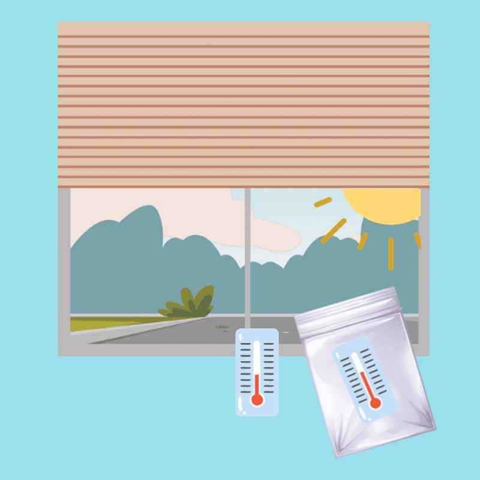

Was ist eigentlich dieser Treibhauseffekt?
Bestimmt habt ihr schon einmal von dem Thema Treibhauseffekt gehört und dass das ein echtes Problem für unseren Planeten ist. Aber was ist der Treibhauseffekt eigentlich? Das könnt ihr mit einem kleinen Experiment leicht selber herausfinden und ich möchte euch zeigen wie.
Dafür brauchst du nur ein paar wenige Dinge.
💭 Sprechblase Dafür brauchst du nur ein paar wenige Dinge.
- Eine kleine, durchsichtige Plastiktüte (z.B. Butterbrottüte oder Gefrierbeutel)
- zwei Zimmerthermometer.
Ich möchte euch nun zeigen, wie das geht.
💭 Denkblase Ich möchte euch nun zeigen, wie das geht.
Lege ein Thermometer in die Plastiktüte und diese auf ein sonniges Fensterbrett (innen oder außen). Das zweite Thermometer legst du daneben. Lies nach ungefähr 10 Minuten die Temperatur an beiden Thermometern ab. Was fällt dir auf?
Hmmmm….interessant. Habt ihr es auch beobachtet?
💭 Denkblase Hmmmm….interessant. Habt ihr es auch beobachtet?

Du wirst beobachtet haben, dass es in der Plastiktüte wärmer ist, als außerhalb.
Aber warum ist das so?
Die Sonnenstrahlen dringen durch die Plastiktüte und verwandeln sich dort in Wärme. Weil die Wärme nur teilweise wieder entweichen kann, steigt die Temperatur in der Tüte wie in einem Treibhaus an. Um unsere Erde herum befindet sich natürlich keine Plastiktüte, bestimmte Gase der Atmosphäre absorbieren aber ganz ähnlich wie Plastik oder Glas in einem Treibhaus die Wärmestrahlen, so dass die Wärme nicht ins Weltall entweichen kann.

Auto –und Industrieabgase verstärken den natürlichen Treibhauseffekt und tragen damit zur zunehmenden Klima-Erwärmung der Erde bei.
Ich hoffe du fandest das kleine Experiment interessant und wir wünschen dir noch einen herrlichen Tag in der Sonne.
Wenn dir dieses Experiment gefallen hat, oder selber welche kennst, dann schreib uns doch.
Dein Kabu-Team